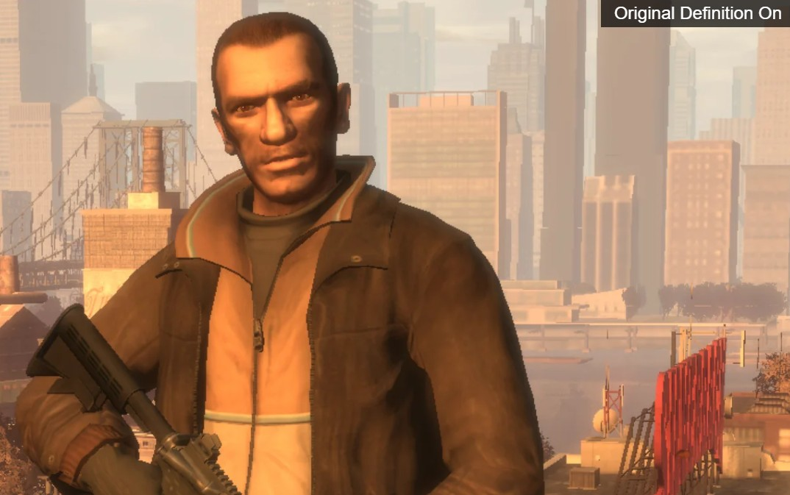

¿Cómo mejorar tu experiencia en GTA IV?
GTA IV es un juego que ofrece una experiencia única en cuanto a jugabilidad, historia y ambientación. Pero tiene un gran problema para los usuarios de PC como yo, y no es precisamente pequeño.
Rockstar, una empresa multimillonaria que es dueña de este videojuego y a la que tanto quiero (tanto que hasta le he dedicado esta página), hizo una optimización horrible para la versión de PC. No sé, ¿será que es más importante el Online o algo?
El caso es que conseguir que GTA IV funcione correctamente puede ser toda una odisea, ya sea por los crasheos, los bugs, los problemas de resolución en algunos puntos de la ciudad o las bajadas de FPS provocadas por su pésima optimización.
Peeero... ¡aquí os traigo la solución! Y encima es gratuita.
Después de investigar bastante (y de algún que otro virus por el camino), he llegado a la conclusión de que FusionFix es una de las mejores opciones para disfrutar de GTA IV a día de hoy en PC.
En este apartado os enseñaré qué problemas del juego original consigue solucionar y qué pequeños detalles añade. Todo ello sin abandonar ese aspecto tan característico del juego vanilla.
Además, haré una pequeña comparación con imágenes para que podáis ver por vosotros mismos qué cambia entre el juego original y el juego con FusionFix.
¿Qué es FusionFix?
Primero que nada, para saber qué vamos a instalar en nuestro ordenador, debemos conocer qué es FusionFix.
FusionFix es un mod gratuito que se encarga de solucionar problemas técnicos, errores y limitaciones del juego que no llegaron a corregirse mediante las actualizaciones oficiales.
Se trata de un proyecto impulsado por la comunidad cuyo objetivo es restaurar, corregir y mejorar GTA IV para que pueda disfrutarse en sistemas modernos.
¿Quién lo desarrolla?
El proyecto está publicado en GitHub por ThirteenAG y cuenta con la colaboración de otros miembros de la comunidad de modding, entre ellos Parallellines0451, Tomasak, sTc2201 y varios colaboradores más. Es un proyecto de código abierto bajo licencia GPL-3.0, por lo que su desarrollo y sus mejoras están documentados públicamente.
¿Qué problemas soluciona y qué añade?
- Gráficos: corrige problemas de iluminación, sombras, reflejos, profundidad de campo y efectos de desenfoque.
- Lluvia y agua: recupera efectos visuales que estaban ausentes o funcionaban mal en PC, como las gotas de lluvia y la espuma de las orillas.
- Luces de la ciudad: corrige las luces lejanas de Liberty City y recupera iluminación que había desaparecido.
- Sombras: mejora su filtrado, distancia de dibujado y otros errores visuales.
- Física: corrige errores relacionados con la tasa de fotogramas, incluido el famoso fallo del helicóptero en la última misión.
- Opciones adicionales: permite saltarse las intros y los menús iniciales, activar la carrera automática, modificar efectos gráficos y utilizar opciones de cámara.
- Otras mejoras: incorpora eventos de temporada, como nieve en invierno y una ambientación especial durante Halloween.

¡OJO! Aunque FusionFix corrige muchos de los problemas del juego original, no garantiza que GTA IV deje de sufrir crasheos por completo. Esto puede depender de las características de tu ordenador o del estado de algunos archivos del propio juego. En mi caso, por ejemplo, ha funcionado perfectamente y no he tenido ningún problema, pero eso no significa que vaya a ocurrir lo mismo en todos los equipos.
¿Dónde podemos descargarlo?
Mi recomendación es descargarlo únicamente desde sus canales oficiales ya que es gratuito:
Página oficial de FusionFix